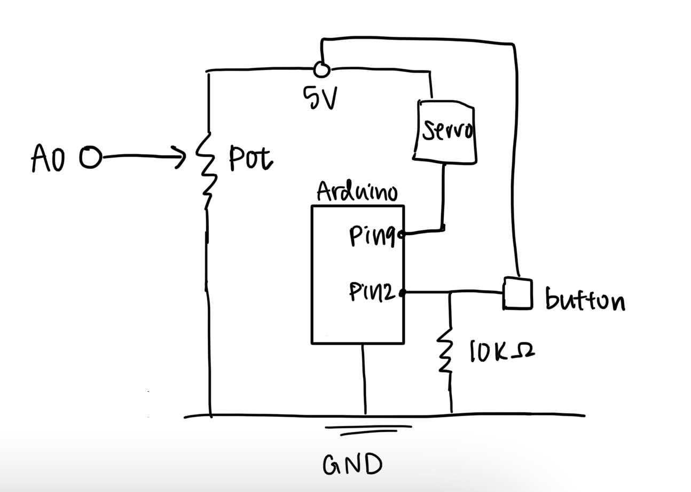

This assignment creates a web page that communicates with the arduino using web serial. By clicking the mouse on the web page,
the arduino receives commands and moves the servo moter. The arduino also sends data back to the web page, allowing the page to display
whether the button is being pressed or not. Similarly, the page also changes background color based on the potentiometer.
Schematic

Schematic for A6: The servo moter is connected to 5V, ground, and pin 9. The push button has one leg connected to 5V, the opposite legs
connected to pin 2 and ground through a 10k resistor. The potentiometer has legs connected to 5V and ground, and its middle leg is connected to
Ao.
Animated GIF
When the button is pressed, the page displays its status. When the mouse is clicked, the servo turns in response. When
the potentiometer is rotated, the background color changes.
Firmware
Arduino code:
#include <Servo.h>
// Create servo object
Servo myservo;
// current servo angle
int currentAngle = 0;
void setup() {
Serial.begin(9600);
myservo.attach(9); // servo on pin 9
pinMode(2, INPUT); // button on pin 2
}
void loop() {
// receive commands from p5 to move the servo
if (Serial.available() > 0) {
// read '1' or '2'
char cmd = Serial.read();
// if read '1'
if (cmd == '1') {
// move servo to 0 degrees
currentAngle = 0;
// if read '2'
} else if (cmd == '2') {
// move servo to 180°
currentAngle = 180;
}
myservo.write(currentAngle);
}
// Read the button
int buttonState = digitalRead(2);
// Read the potentiometer
int potValue = analogRead(A0);
// Send values to p5 as button,pot
Serial.print(buttonState);
Serial.print(",");
Serial.println(potValue);
delay(20);
}
js code:
const BAUD_RATE = 9600; // This should match the baud rate in your Arduino sketch
let port, connectBtn; // Declare global variables
function setup() {
setupSerial(); // Run our serial setup function (below)
// Create a canvas that is the size of our browser window.
// windowWidth and windowHeight are p5 variables
createCanvas(windowWidth, windowHeight);
// p5 text settings. BOLD and CENTER are constants provided by p5.
// See the "Typography" section in the p5 reference: https://p5js.org/reference/
textFont("system-ui", 50);
textStyle(BOLD);
textAlign(CENTER, CENTER);
}
function draw() {
const portIsOpen = checkPort(); // Check whether the port is open (see checkPort function below)
if (!portIsOpen) return; // If the port is not open, exit the draw loop
// read one full line of incoming data
let str = port.readUntil("\n");
// if nothing was read, exit
if (str.length == 0) return;
// split button and pot with a comma
let values = str.trim().split(",");
// if less than 2 values, exit
if (values.length < 2) return;
let buttonState = Number(values[0]); // button state: 0 or 1
let potValue = Number(values[1]); // pot reading: 0–1023
// Map potentiometer's range (0-1023) to background brightness level 0-255
let bgValue = map(potValue, 0, 1023, 0, 255);
background(bgValue);
// Change text and colors based on button state. In p5, you can set colors
// using standard CSS color names as well as many other color formats.
if (buttonState === 0) {
// If the button is not pressed
fill("coral"); // Fill color for the text
text("Button: Not Pressed", windowWidth / 2, windowHeight / 2); // Position text in center of the screen
} else if (buttonState === 1) {
// If the button is pressed
fill("yellow"); // Fill color for the text
text("Button: Pressed!", windowWidth / 2, windowHeight / 2); // Position text in center of the screen
}
}
// Three helper functions for managing the serial connection.
function setupSerial() {
port = createSerial();
// Check to see if there are any ports we have used previously
let usedPorts = usedSerialPorts();
if (usedPorts.length > 0) {
// If there are ports we've used, open the first one
port.open(usedPorts[0], BAUD_RATE);
}
// create a connect button
connectBtn = createButton("Connect to Arduino");
connectBtn.position(5, 5); // Position the button in the top left of the screen.
connectBtn.mouseClicked(onConnectButtonClicked); // When the button is clicked, run the onConnectButtonClicked function
}
function checkPort() {
if (!port.opened()) {
// If the port is not open, change button text
connectBtn.html("Connect to Arduino");
// Set background to gray
background("gray");
return false;
} else {
// Otherwise we are connected
connectBtn.html("Disconnect");
return true;
}
}
function onConnectButtonClicked() {
// When the connect button is clicked
if (!port.opened()) {
// If the port is not opened, open it
port.open(BAUD_RATE);
} else {
// Otherwise, close it!
port.close();
}
}
// function to send command when mouse is pressed
function mousePressed() {
if (!port.opened()) return;
port.write("1"); // move servo to 0°
}
// function to send command when mouse is released
function mouseReleased() {
if (!port.opened()) return;
port.write("2"); // move servo to 180°
}